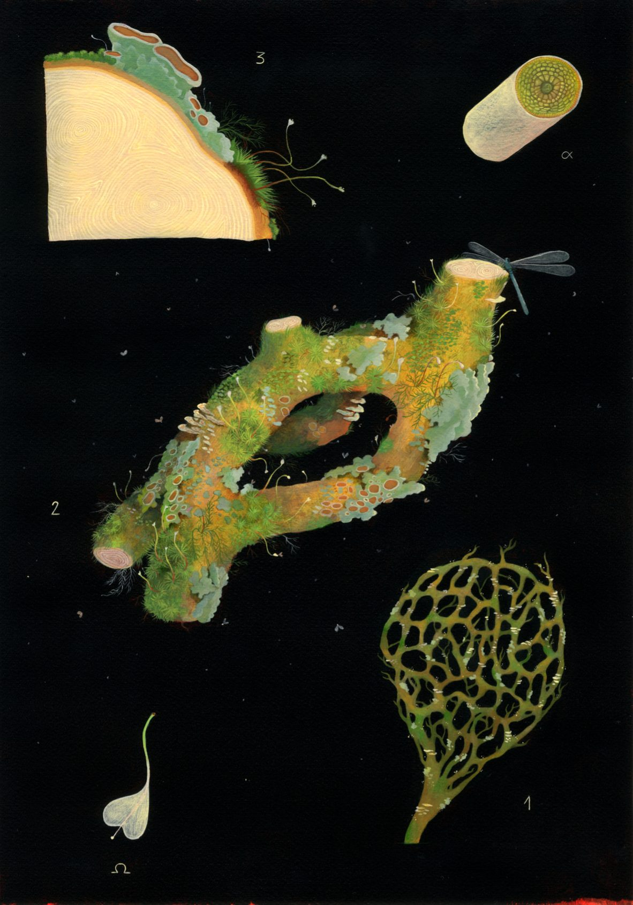
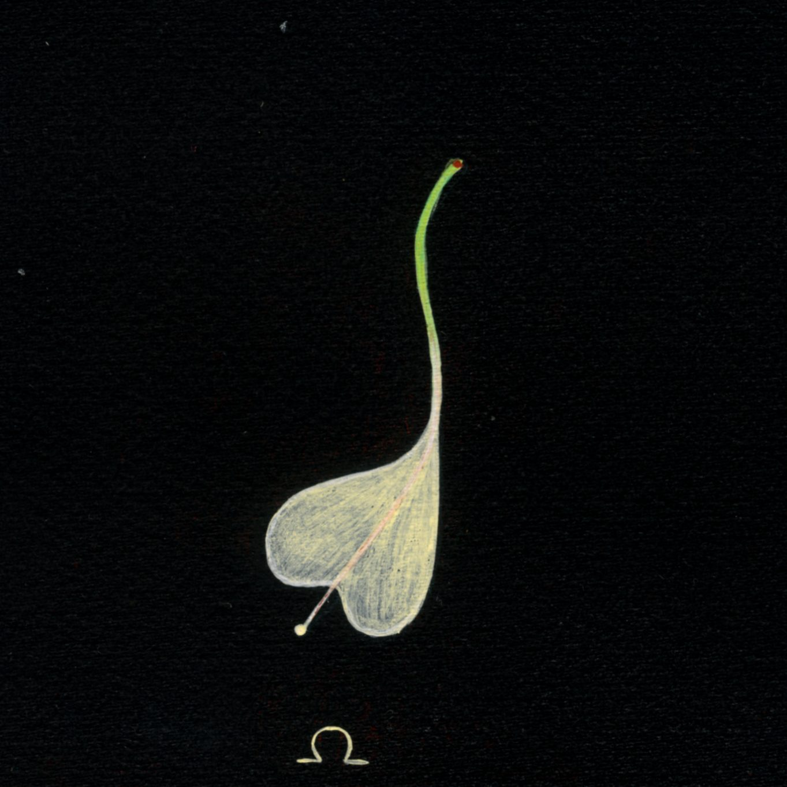

Studio a tema botanica immaginaria, ispirato alle tavole scientifiche di illustrazione botanica e al fenomeno naturale dell'inosculazione: un particolare tipo di innesto spontaneo che avviene tra rami o tronchi di una stessa pianta (o di piante diverse), fondendosi in un unico organismo.

-giuliacornaggia.jpg)
-giuliacornaggia.jpg)